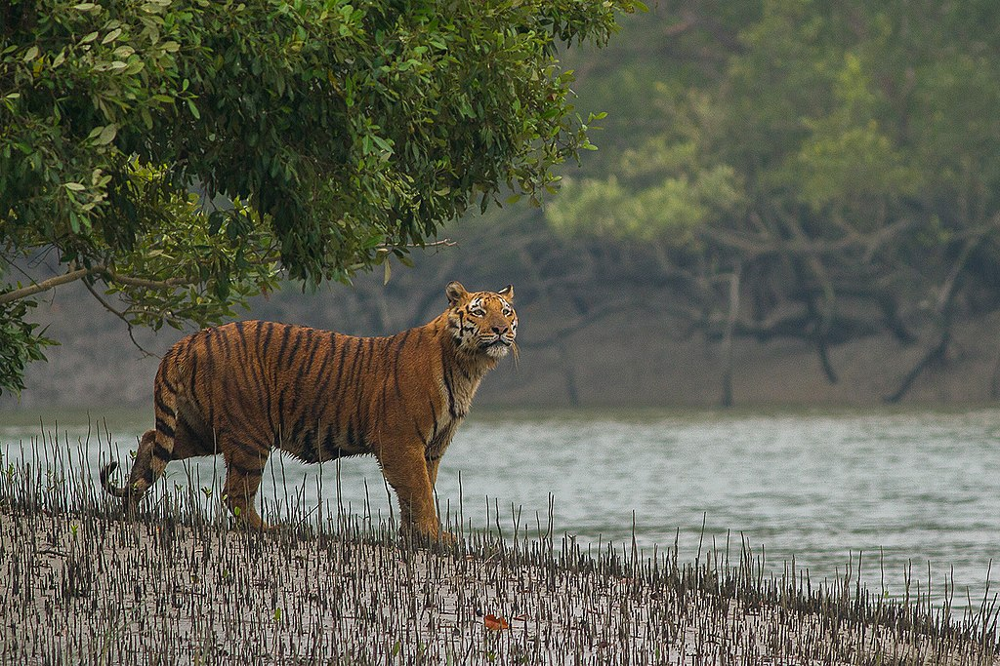
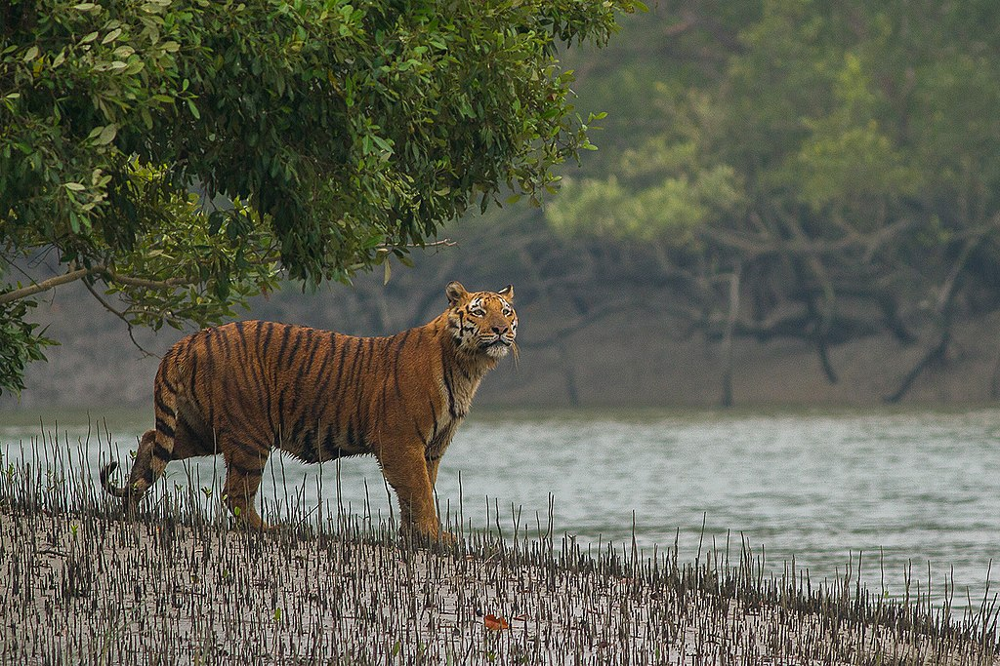

Sundarbans
 


About Sundarbans
The Sundarbans is a mangrove area in the delta formed by the confluence of the Ganges, Brahmaputra and Meghna Rivers in the Bay of Bengal.
It spans from the Hooghly River in India's state of West Bengal to the Baleswar River in Bangladesh. It comprises closed and open mangrove forests, agriculturally used land, mudflats and barren land, and is intersected by multiple tidal streams and channels.
Location
The Sundarban forest lies in the vast delta on the Bay of Bengal formed by the super confluence of the Ganges, Hooghly, Padma, Brahmaputra and Meghna rivers across southern Bangladesh.
Description
The history of the area can be traced back to 200–300 AD. A ruin of a city built by Chand Sadagar has been found in the Baghmara Forest Block. During the Mughal period, the Mughal Kings leased the forests of the Sundarbans to nearby residents. Many criminals took refuge in the Sundarbans from the advancing armies of Emperor Akbar. Many have been known to be attacked by tigers.The history of the area can be traced back to 200–300 AD. A ruin of a city built by Chand Sadagar has been found in the Baghmara Forest Block. During the Mughal period, the Mughal Kings leased the forests of the Sundarbans to nearby residents. Many criminals took refuge in the Sundarbans from the advancing armies of Emperor Akbar. Many have been known to be attacked by tigers. Many of the buildings which were built by them later fell to hands of Portuguese pirates, salt smugglers and dacoits in the 17th century. Evidence of the fact can be traced from the ruins at Netidhopani and other places scattered all over Sundarbans. The legal status of the forests underwent a series of changes, including the distinction of being the first mangrove forest in the world to be brought under scientific management. The area was mapped first in Persian, by the Surveyor General as early as 1769 following soon after proprietary rights were obtained from the Mughal Emperor Alamgir II by the British East India Company in 1757. Systematic management of this forest tract started in the 1860s after the establishment of a Forest Department in the Province of Bengal, in British India. The management was entirely designed to extract whatever treasures were available, but labour and lower management mostly were staffed by locals, as the British had no expertise or adaptation experience in mangrove forests. The first Forest Management Division to have jurisdiction over the Sundarbans was established in 1869. In 1875 a large portion of the mangrove forests was declared as reserved forests under the Forest Act, 1865 (Act VIII of 1865). The remaining portions of the forests were declared a reserve forest the following year and the forest, which was so far administered by the civil administration district, was placed under the control of the Forest Department. A Forest Division, which is the basic forest management and administration unit, was created in 1879 with the headquarters in Khulna, Bangladesh. The first management plan was written for the period 1893 to 1898.
Entry Fees
No Entry Fees.
Visiting Hours
Always open for visitors.